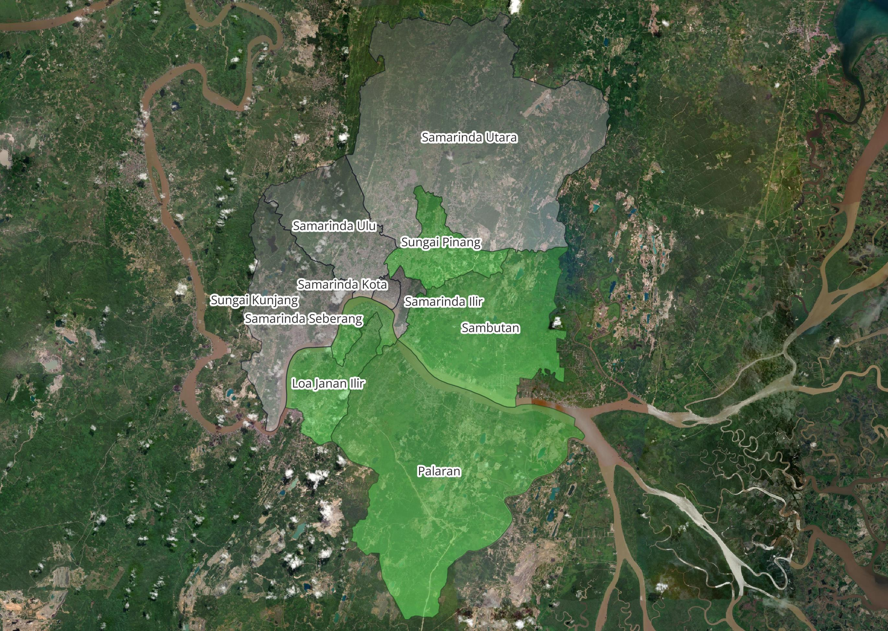

Jalan Rawan :
Jalan Rawan :
Kepadatan: 5.16/km2
Luas: 12,49km2
Jalan Rawan :
- Jl. Harapan Baru
- Jl. Mangkupalas
Kepadatan: 3.11/km2
Luas: 34,16km2
Jalan Rawan :
- Jl. Perjuangan & Pramuka
- Jl. Gerilya
- Jl. Sentosa
Kepadatan: 0,57/km2
Luas: 100,95km2
Jalan Rawan :
- Jl. Poros Makroman-Mahkota
- Jl. Sultan Sulaiman
Kepadatan: 2,53/km2
Luas: 26,13km2
Jalan Rawan :
- Jl. Tani Aman
- Jl. Rapak Dalam
Kepadatan: 0,29/km2
Luas: 221,29km2
Jalan Rawan :
- Jl. Poros Simpang Pasir
- Jl. P. Diponegoro Bukuan